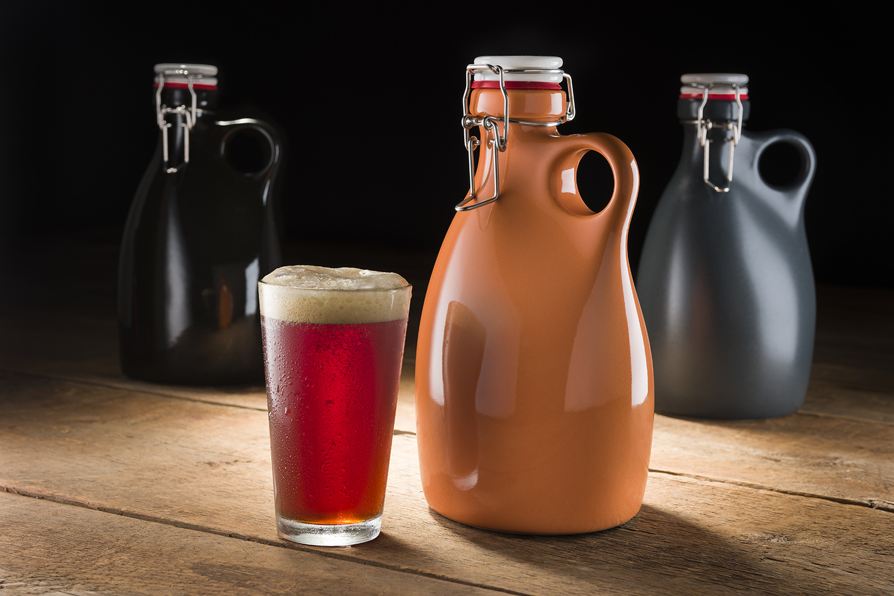

Beer brewing project
Wouldn't you like to tailor an IPA to the hopiness to your choosing, affordably and consistently? And wouldn't you want to do it in the comfort of your own home? The beer brewing project combines process control and the Internet-Of-Things (IOT) in a user-friendly package, potentially allowing any user to be brewmasters, anywhere.